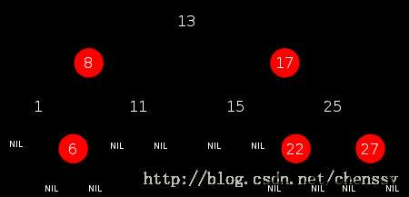

在了解完Vector、ArrayList和LinkedList之后，集合中还有TreeSet和HashSet两个类，但是它们的底层实现是基于HashMap和TreeMap的，所以这里先了解一下HashMap和TreeMap的实现。
HashMap和TreeMap都是实现的map接口，其主要特点是内部数据为key-value的键值对的形式。HashMap允许null键值对，切可以查到null的key对应的value，而TreeMap塞值的时候不会报错，但是通过null的key去取值的时候会报空指针异常。
1、TreeMap
TreeMap的实现基于的二叉树中的红黑树。
这里简单介绍一下红黑树和红黑树的基本规则：
a、每个节点都只能是红色或者黑色
b、根节点是黑色
c、每个叶节点（NIL节点，空节点）是黑色的。
d、如果一个结点是红的，则它两个子节点都是黑的。也就是说在一条路径上不能出现相邻的两个红色结点。
e、从任一节点到其每个叶子的所有路径都包含相同数目的黑色节点。

而红黑树本身也属于平衡二叉树，在操作它的过程中，主要通过左旋、右旋、着色三中方式来保证二叉树自身的平衡。
而红黑树的更深的理解和研究就不在这里赘述了，还是回到TreeMap的实现上来。
TreeMap的定义：
public class TreeMap<K,V> extends AbstractMap<K,V> implements NavigableMap<K,V>, Cloneable, java.io.Serializable
属性：
Comparator<? super K> comparator比较器，由于TreeMap本身是有序的，可以指定比较器让其排序顺序符合我们的期望
Entry<K,V> root = null TreeMap的内部类，红黑树的实现主体
int size = 0 TreeMap的大小
modCount = 0 修改次数
boolean RED = false 红黑树的节点颜色：红
boolean BLACK = true 红黑树的节点颜色：黑
再来看一下内部实体类Entry的定义
static final class Entry<K,V> implements Map.Entry<K,V>{
K key;
V value;
Entry<K,V> left = null;//左元素
Entry<K,V> right = null;//右元素
Entry<K,V> parent;//父元素
boolean color = BLACK;//节点色
Entry(K key, V value, Entry<K,V> parent) {
this.key = key;
this.value = value;
this.parent = parent;
}
public V put(K key, V value) {
//用t表示二叉树的当前节点
Entry<K,V> t = root;
//t为null表示一个空树，即TreeMap中没有任何元素，直接插入
if (t == null) {
compare(key, key);
//将新的key-value键值对创建为一个Entry节点，并将该节点赋予给root
root = new Entry<>(key, value, null);
//容器的size = 1，表示TreeMap集合中存在一个元素
size = 1;
//修改次数 + 1
modCount++;
return null;//返回null
}
int cmp;//cmp表示key排序的返回结果
Entry<K,V> parent; //父节点
Comparator<? super K> cpr = comparator; //指定的排序算法
//如果cpr不为空，则采用既定的排序算法进行创建TreeMap集合
if (cpr != null) {
do {
parent = t; //parent指向上次循环后的t
//比较新增节点的key和当前节点key的大小
cmp = cpr.compare(key, t.key);
//cmp返回值小于0，表示新增节点的key小于当前节点的key，则以当前节点的左子节点作为新的当前节点
if (cmp < 0)
t = t.left;
//cmp返回值大于0，表示新增节点的key大于当前节点的key，则以当前节点的右子节点作为新的当前节点
else if (cmp > 0)
t = t.right;
//cmp返回值等于0，表示两个key值相等，则新值覆盖旧值，并返回新值
else
return t.setValue(value);
} while (t != null);
}
//如果cpr为空，则采用默认的排序算法进行创建TreeMap集合
else {
if (key == null) //key值为空抛出异常
throw new NullPointerException();
/* 下面处理过程和上面一样 */
Comparable<? super K> k = (Comparable<? super K>) key;
do {
parent = t;
cmp = k.compareTo(t.key);
if (cmp < 0)
t = t.left;
else if (cmp > 0)
t = t.right;
else
return t.setValue(value);
} while (t != null);
}
//将新增节点当做parent的子节点
Entry<K,V> e = new Entry<>(key, value, parent);
//如果新增节点的key小于parent的key，则当做左子节点
if (cmp < 0)
parent.left = e;
//如果新增节点的key大于parent的key，则当做右子节点
else
parent.right = e;
/*
* 上面已经完成了排序二叉树的的构建，将新增节点插入该树中的合适位置
* 下面fixAfterInsertion()方法就是对这棵树进行调整、平衡，具体过程参考上面的五种情况
*/
fixAfterInsertion(e);
//TreeMap元素数量 + 1
size++;
//TreeMap容器修改次数 + 1
modCount++;
return null;
}
/**
* 新增节点后的修复操作
* x 表示新增节点
*/
private void fixAfterInsertion(Entry<K,V> x) {
x.color = RED; //新增节点的颜色为红色
//循环 直到 x不是根节点，且x的父节点不为红色
while (x != null && x != root && x.parent.color == RED) {
//如果X的父节点（P）是其父节点的父节点（G）的左节点
if (parentOf(x) == leftOf(parentOf(parentOf(x)))) {
//获取X的叔节点(U)
Entry<K,V> y = rightOf(parentOf(parentOf(x)));
//如果X的叔节点（U） 为红色（情况三）
if (colorOf(y) == RED) {
//将X的父节点（P）设置为黑色
setColor(parentOf(x), BLACK);
//将X的叔节点（U）设置为黑色
setColor(y, BLACK);
//将X的父节点的父节点（G）设置红色
setColor(parentOf(parentOf(x)), RED);
x = parentOf(parentOf(x));
}
//如果X的叔节点（U为黑色）；这里会存在两种情况（情况四、情况五）
else {
//如果X节点为其父节点（P）的右子树，则进行左旋转（情况四）
if (x == rightOf(parentOf(x))) {
//将X的父节点作为X
x = parentOf(x);
//右旋转
rotateLeft(x);
}
//（情况五）
//将X的父节点（P）设置为黑色
setColor(parentOf(x), BLACK);
//将X的父节点的父节点（G）设置红色
setColor(parentOf(parentOf(x)), RED);
//以X的父节点的父节点（G）为中心右旋转
rotateRight(parentOf(parentOf(x)));
}
}
//如果X的父节点（P）是其父节点的父节点（G）的右节点
else {
//获取X的叔节点（U）
Entry<K,V> y = leftOf(parentOf(parentOf(x)));
//如果X的叔节点（U） 为红色（情况三）
if (colorOf(y) == RED) {
//将X的父节点（P）设置为黑色
setColor(parentOf(x), BLACK);
//将X的叔节点（U）设置为黑色
setColor(y, BLACK);
//将X的父节点的父节点（G）设置红色
setColor(parentOf(parentOf(x)), RED);
x = parentOf(parentOf(x));
}
//如果X的叔节点（U为黑色）；这里会存在两种情况（情况四、情况五）
else {
//如果X节点为其父节点（P）的右子树，则进行左旋转（情况四）
if (x == leftOf(parentOf(x))) {
//将X的父节点作为X
x = parentOf(x);
//右旋转
rotateRight(x);
}
//（情况五）
//将X的父节点（P）设置为黑色
setColor(parentOf(x), BLACK);
//将X的父节点的父节点（G）设置红色
setColor(parentOf(parentOf(x)), RED);
//以X的父节点的父节点（G）为中心右旋转
rotateLeft(parentOf(parentOf(x)));
}
}
}
//将根节点G强制设置为黑色
root.color = BLACK;
}
public HashMap() {//若无参构造时，使用默认参数值
this.loadFactor = DEFAULT_LOAD_FACTOR;
threshold = (int)(DEFAULT_INITIAL_CAPACITY * DEFAULT_LOAD_FACTOR);
table = new Entry[DEFAULT_INITIAL_CAPACITY];
init();
}
static class Entry<K,V> implements Map.Entry<K,V> {
final K key;
V value;
Entry<K,V> next; //引用下一个元素，形成链表结构
final int hash;
/**
* Creates new entry.
*/
Entry(int h, K k, V v, Entry<K,V> n) {
value = v;
next = n;
key = k;
hash = h;
}
public final boolean equals(Object o) { //重写了比较方法，比较hash值
if (!(o instanceof Map.Entry))
return false;
Map.Entry e = (Map.Entry)o;
Object k1 = getKey();
Object k2 = e.getKey();
if (k1 == k2 || (k1 != null && k1.equals(k2))) {
Object v1 = getValue();
Object v2 = e.getValue();
if (v1 == v2 || (v1 != null && v1.equals(v2)))
return true;
}
return false;
}
public final int hashCode() { //通过key和value来定义hashcode值
return (key==null ? 0 : key.hashCode()) ^
(value==null ? 0 : value.hashCode());
}
}
public V put(K key, V value) {
if (key == null)
return putForNullKey(value);//若key为空，调用塞空KEY的方法
int hash = hash(key.hashCode());
int i = indexFor(hash, table.length);//通过key的hash值来找到位置下标i
for (Entry<K,V> e = table[i]; e != null; e = e.next) {//在entry数组的i位置，通过Next遍历链表中的数据
Object k;
if (e.hash == hash && ((k = e.key) == key || key.equals(k))) {
V oldValue = e.value;//若key存在，则替换掉原有的value，并返回旧value
e.value = value;
e.recordAccess(this);
return oldValue;
}
}
modCount++;
addEntry(hash, key, value, i);//若不存在相同的key则正常添加实体对象
return null;
}
void addEntry(int hash, K key, V value, int bucketIndex) {
//获取bucketIndex处的Entry
Entry<K,V> e = table[bucketIndex];
//将新创建的 Entry 放入 bucketIndex 索引处，并让新的 Entry 指向原来的 Entry
table[bucketIndex] = new Entry<K,V>(hash, key, value, e);
//若HashMap中元素的个数超过极限了，则容量扩大两倍
if (size++ >= threshold)
resize(2 * table.length);
}
static int indexFor(int h, int length) {
return h & (length-1);
}
TreeSet(NavigableMap<E,Object> m) {
this.m = m;
}
public TreeSet() {
this(new TreeMap<E,Object>());//可以看到这里的实际实现就是新建一个TreeMap对象
}
public TreeSet(Comparator<? super E> comparator) {
this(new TreeMap<E,Object>(comparator));
}
public boolean add(E e) {
return m.put(e, PRESENT)==null;
}
public boolean add(E e) {
return map.put(e, PRESENT)==null;
}